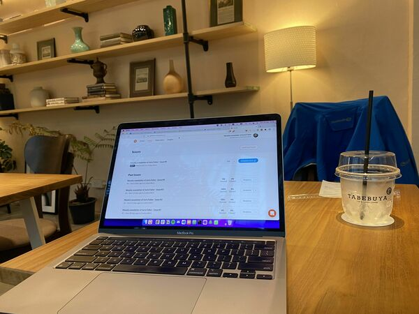

Newsletter #5: About Keystone Habits
This newsletter was originally published on the Revue platform, which Twitter (now X) killed after being taken over by Elon Musk. I now republish it here. My latest newsletters are on Convertkit.
I read “The Power of Habit” in one go, on a day flight from Auckland to Bangkok.
One of the concepts is a keystone habit.
I will explain with an example.
I had my life pretty figured out. Wake up in the morning, do sports. Have healthy breakfast. Meditate. Work disciplined throughout the day, and fast throughout. Eat fruits at 4pm. Eat small diner at 5pm. Get a good night sleep by going to bed early.
I felt great, like Elon Musk in his why the heck do I feel so good starter pack.
Four months ago, a small little baby miracle joined our family.
I stopped doing morning sports. And I stopped meditating.
Life became mostly execution. Less time to take a step back. No opportunity to observe and improve.
I started indulging in bad food. The daily sports weren’t there anymore to remind me to be healthy. I became more driven by finding a coffee bar with a good chocolate smoothie, rather then one where I can work productively.
I started to feel bad about myself, and my enthusiasm went down. I ate crap, and had low energy.
All of that led from an opportunistic mindset to a fear mindset for the future. From there onwards it’s a downward spiral.
Things like sports and meditation are keystone habits because they remind me about living a healthy lifestyle, day after day. Which eventually impacts my self-confidence and motivation.
Gaining 5 kilograms in 5 months does the opposite.
You need time in your day for yourself if you want to be in charge of your life. If you don’t have 10 minutes for yourself, you don’t have a life, Tony Tobbins says. More true than ever!
With that, I wish you a great week from Tabebuya, a coffee place close by my house because it rains unstoppably.
